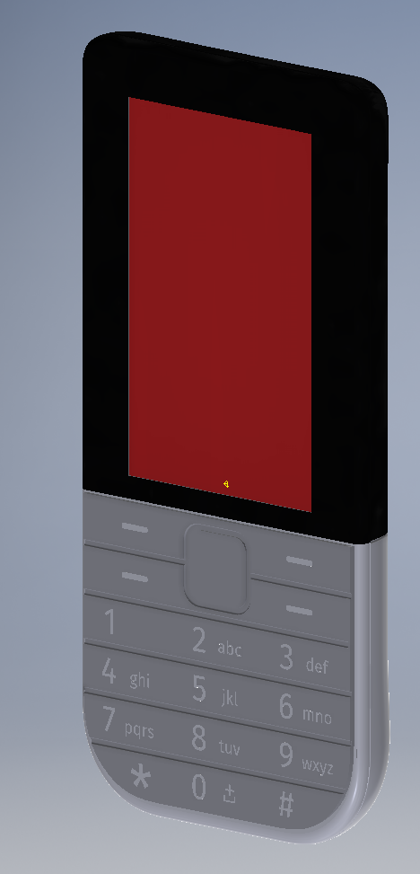

Using the Sharp Memory LCD and the esp8266 wifi chipset, I am designing a simple qwerty messenger.
As of Feb 2017, the schematic has been moved to Kicad, BOM is being worked on, and soon the PCB layout will begin. I would like to add LTE if an affordable module comes out.
This project used to be a full fledged minimalst Cell Phone. I was doing the hardware design for Minium, but they have since pivoted and wish to open source the old work.
I dropped the cellular chipset from the open source project because it had some NDA's, it is expensive, and I only think it is worth doing for LTE (2G is being phased out this year, who knows how soon 3G will be).
Going forward I think the device could be useful as an encrypted messaging client. Hopefully someone can help develop an app to use the federated protocol Matrix.
Esp8266 also offers some neat options for mesh networks

V0.3 Schematic
We got to a point where the phone had a simple GUI, could text, and place calls. A few of the features were never tested in software.